myBalsamiq
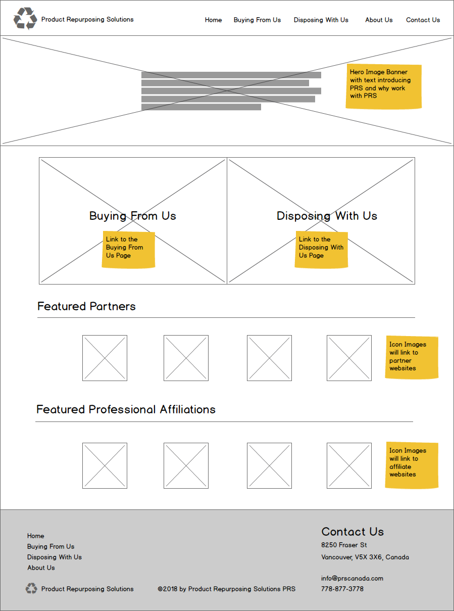 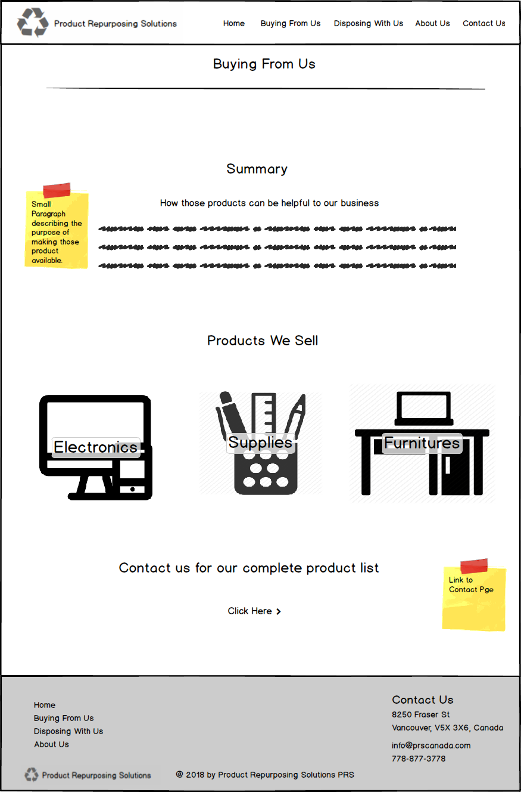 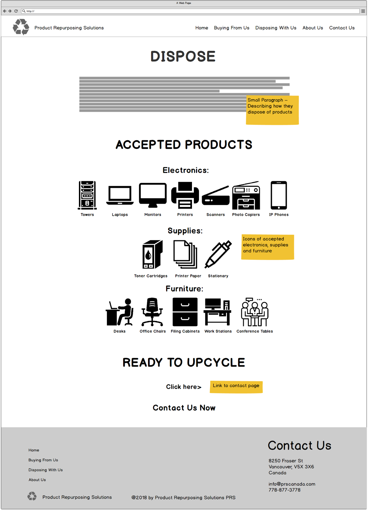 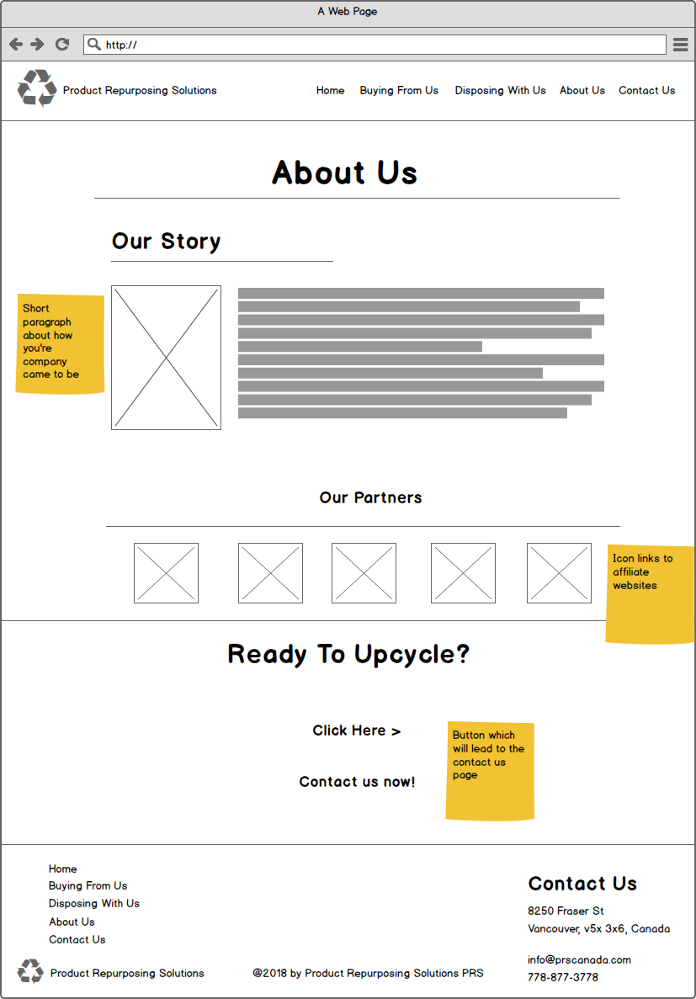Colour Palette

Adobe XD Prototype

 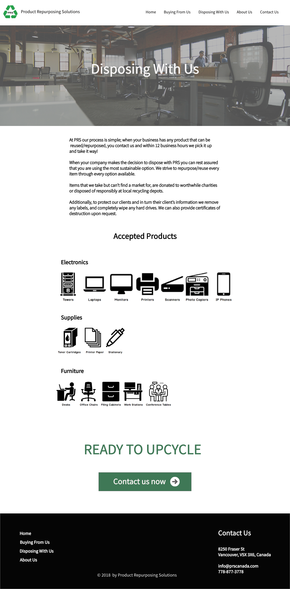
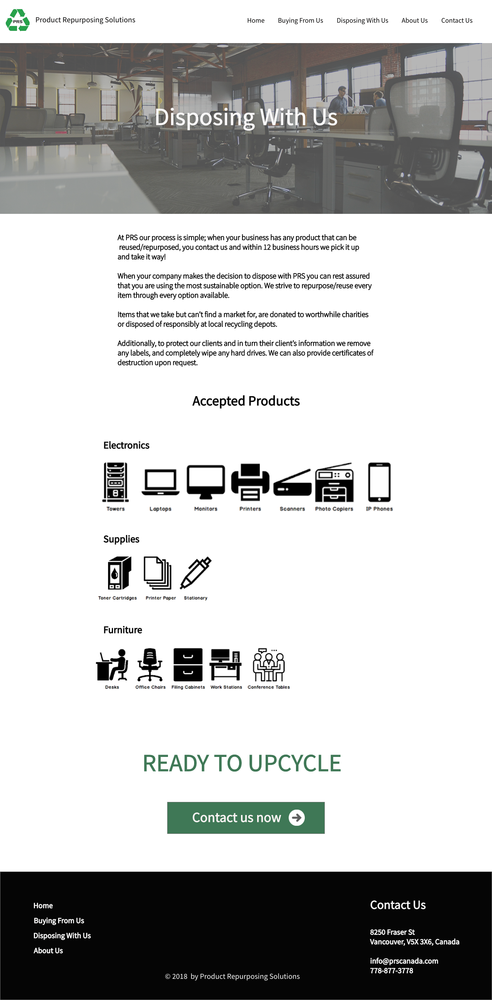


Product Repurposing Solutions (PRS) is a repurposing and recycling company looking to revamp their current website and move it to a Wordpress CRM. As a team of four, we had a face to face discovery meeting where we gathered information and requirement from the client. We decided to create a informational website with a call to action on contacting the company through a online form, email, or phone call.
For the planning phase, we provided the client with the information architecture (navigation system), outline of the individual webpages, and wireframes for approval. Then in the design phase, we provided the client with a design presentation that shows the website in full color. During these phases, we were contacting the client and getting feedback so that we can reiterate the process if there is any changes to be made. After all the wireframes and design are approved, we started the development in WordPress where we used HTML, CSS, PHP, Git, SASS, and Gulp as the tools to build the website. We developed the site with planned information architecture using custom post types and advanced custom fields. With the completion of the website, site testing will be conducted to ensure usability.
myBalsamiq
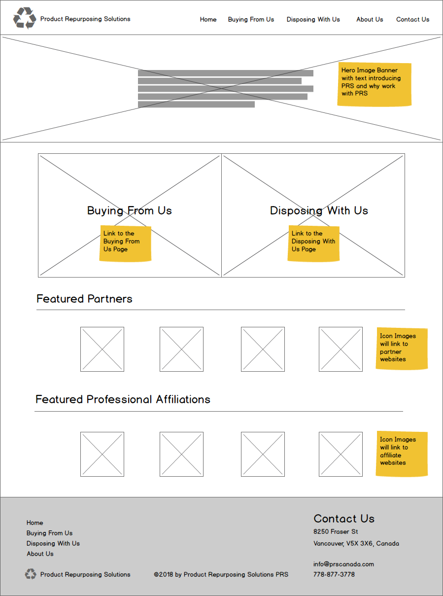 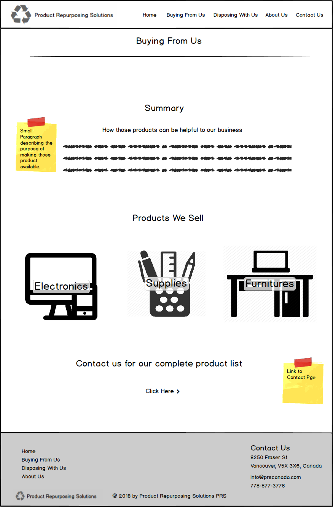 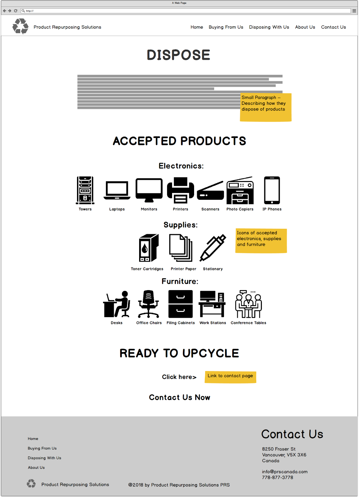 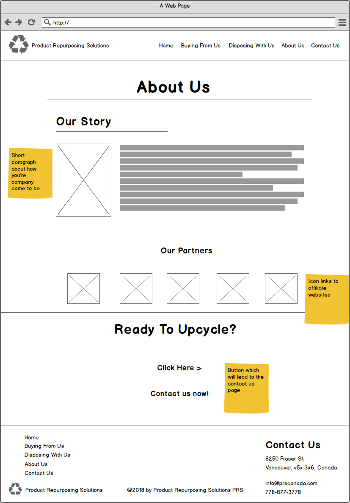
Adobe XD Prototype
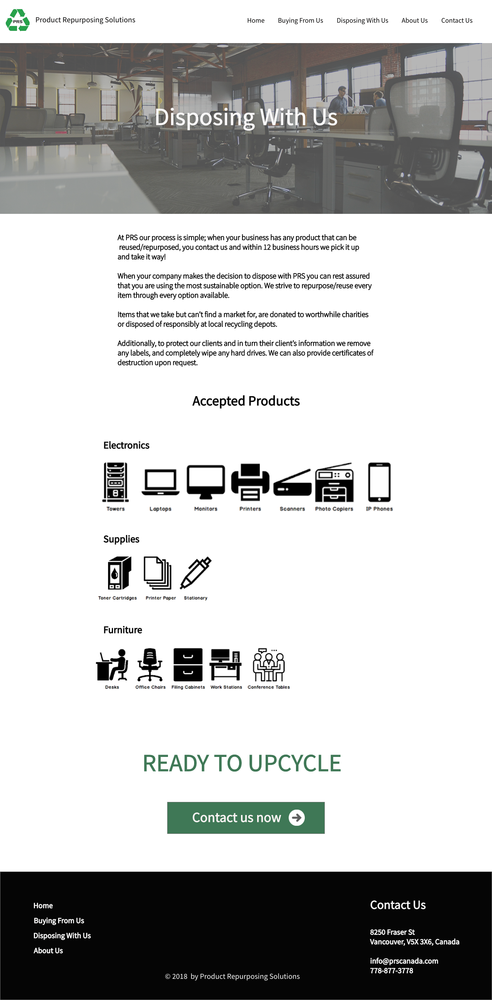